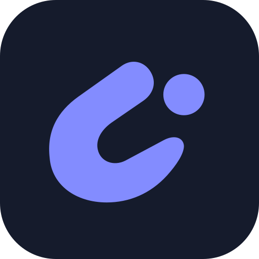
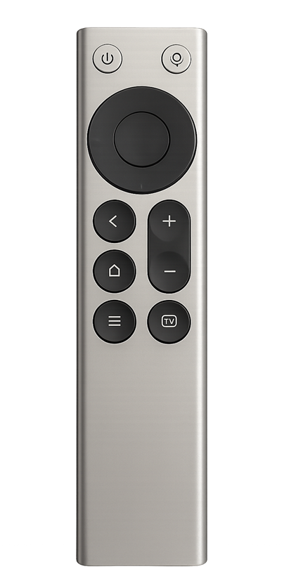

按住说，松开停
中文流式识别在本机运行，说话时持续更新文字。支持自动标点、词典和可选热词，识别速度取决于电脑与语音环境。

声控台CODEX REMOTEWindows 11 · 中文本地语音
小米蓝牙遥控器，成为你的语音输入与快捷操作工具。边说边识别，松开即停；常用动作，交给手边的实体按键。

帮我检查这个页面，
把主要按钮放得更醒目。
WHAT YOU CAN DO
围绕 Windows 与 Codex 的实际使用流程。
本次发布提供已经落地的功能。
中文流式识别在本机运行，说话时持续更新文字。支持自动标点、词典和可选热词，识别速度取决于电脑与语音环境。
为方向、确认、返回、主页、菜单与音量等按键设置动作。支持快捷键、打开应用与组合操作；扩展按键需启用管理员辅助。
切换当前可用模型，增加或降低一档推理强度，开启或关闭快速模式。跟随实际 Codex 界面，可用能力取决于账号和模型。
把识别结果填进 Codex 输入框，默认由你确认发送。检测到手动改稿或光标变化时停止续写；符合条件时可撤销最近一次语音填入。
保存常用指令，绑定按键或放入菜单。用方向键选择、OK 确认；聚焦 Codex 输入框时保持原有窗口大小。
可选保存识别历史，按应用、日期与关键词回看；查看按键次数与语音时长。历史默认关闭，开启后保存在本机。
GET STARTED
安装包已包含本地识别所需资源。
基础语音不依赖虚拟麦克风驱动。
下载 Windows x64 安装包并安装。便携版请完整解压，保持资源目录完整。
在 Windows 蓝牙设置中完成配对，再到声控台的「连接与语音」页选择设备。
打开 Codex 的目标输入框，按住遥控器麦克风说话，松开后检查识别草稿。
在「按键」页设置常用动作。RC003 左、返回、音量＋/－需要点击「启用扩展按键（管理员）」。
BEFORE YOU DOWNLOAD
这是面向实际使用持续完善的预览版，
不把局部实测当作所有设备都已通过。
READY WHEN YOU ARE
正在读取版本信息…
包含本地识别资源，安装后即可配置使用。
↓ 下载安装包正在读取大小保留完整目录，与安装版使用同一本机配置。
↓ 下载便携 ZIP正在读取大小请先从托盘正常退出旧版，再升级。安装版和便携版请勿同时运行。本版尚无 Authenticode 代码签名，可用 SHA-256 核对文件完整性。